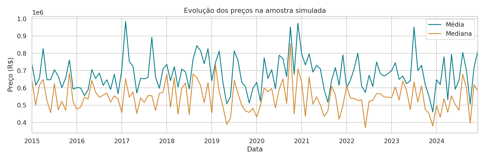
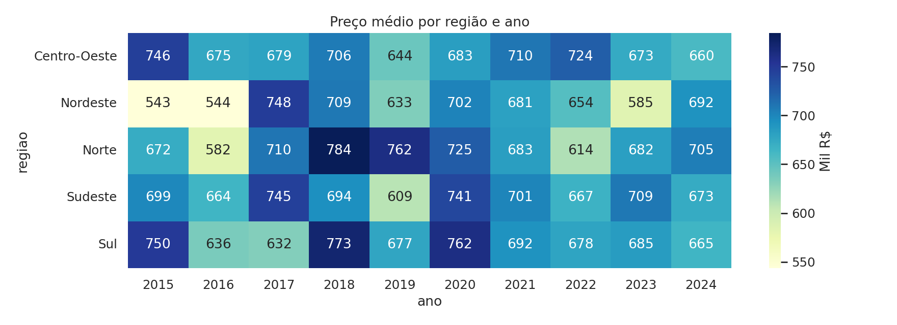

O que queremos investigar?
Quais cidades e regiões apresentam maiores preços? Como as médias variam no tempo? Qual tipo de imóvel possui maior valor? Existe associação entre área, renda e preço?
O projeto integra preparação de dados, indicadores, análise exploratória, banco SQLite e dashboard com sete filtros.
Uma década em perspectiva

Médias e medianas ajudam a identificar oscilações e o efeito dos valores extremos. Os registros não acompanham os mesmos imóveis.
Diferenças regionais

Conclusão da amostra
No recorte de 4,440 observações, Serra apresenta o maior preço médio, Sul lidera entre as regiões e Apartamento tem o maior preço médio entre os tipos. A correlação de Pearson entre renda e preço é -0.011. A média das variações anuais comparáveis é 0.32%. As médias refletem a composição da amostra; não acompanham os mesmos imóveis. Os dados são simulados e não permitem conclusões sobre o mercado brasileiro real, causalidade ou recomendações de investimento.
Dados simulados, cobertura parcial e valores nominais. Os resultados não constituem uma estimativa do mercado imobiliário brasileiro real.
Tratamento que faz diferença
A coluna original de preço/m² foi preservada para auditoria. Os indicadores utilizam preço dividido por área, corrigindo a inconsistência matemática. Outliers são sinalizados e mantidos.
As funcionalidades avançadas são persistência com SQLAlchemy + SQLite e correlação estatística. Python, Pandas, Matplotlib, Seaborn e Streamlit compõem a aplicação.